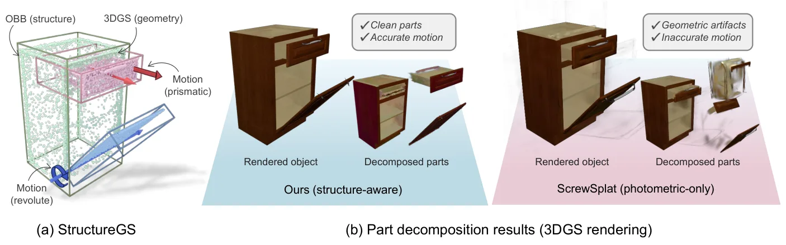
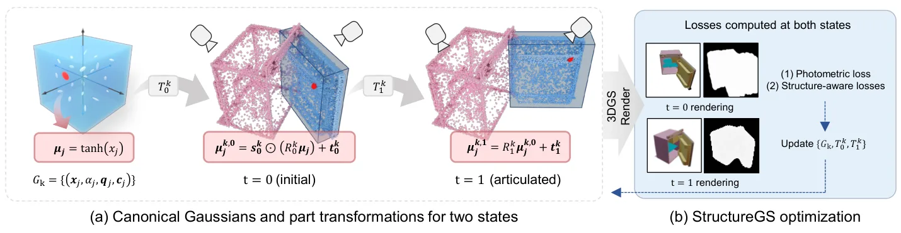
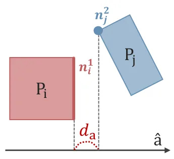
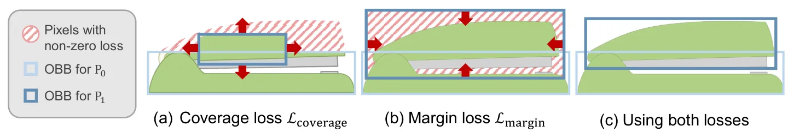
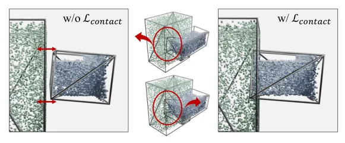
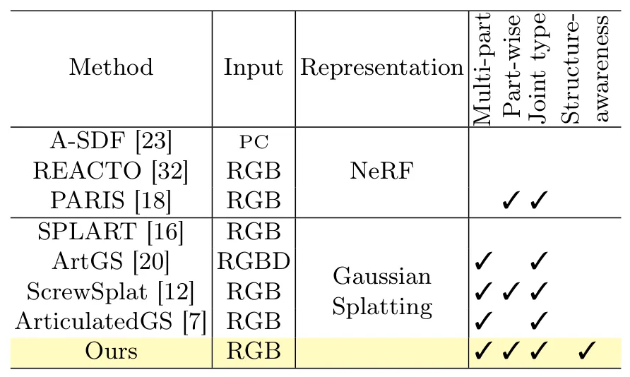

StructureGS：面向关节物体重建的结构感知 Gaussian SplattingStructureGS: Structure-aware Gaussian Splatting for Articulated Object Reconstruction
结构约束直接处理动态/关节对象几何与运动纠缠，对可交互重建有价值；依赖 OBB guidance，其标注成本与误差敏感性待核查。
一句话工作总结
借助部件 OBB 对空间连贯性和结构连接性施加显式损失，改善关节物体 3DGS 的分解边界与几何。
摘要
StructureGS 针对关节物体重建中 geometry、appearance 与 motion 参数相互纠缠的问题，将部件 oriented bounding boxes 作为结构指导注入 3D Gaussian Splatting。其 structure-aware losses 强制两项属性：spatial coherence 约束每个部件的几何在指定区域内保持紧凑连贯，structural connectivity 则约束相邻部件形成物理合理的接触关系。摘要报告该方法获得 SOTA articulated object reconstruction，并生成边界清晰、几何质量更好的部件。
Reconstructing articulated objects with multiple movable parts is essential for understanding object structure and enabling physical interaction. However, this reconstruction task poses significant challenges due to the entanglement of geometry, appearance, and motion parameters during optimization. Existing methods rely primarily on photometric supervision, which commonly fails to disentangle these interdependent components, resulting in poor part decomposition with blurred boundaries and geometric artifacts. To address this limitation, we introduce StructureGS, a reconstruction framework for articulated objects that integrates structure-aware guidance into 3D Gaussian Splatting. Our approach leverages oriented bounding boxes of object parts to enforce two key structural properties: spatial coherence, which constrains each part's geometry to remain compact and spatially coherent within its designated region, and structural connectivity, which enforces physically plausible contact relationships between adjacent parts. These properties are realized through structure-aware losses that inject explicit structural constraints into the optimization process. Extensive experiments demonstrate that our method achieves state-of-the-art performance in articulated object reconstruction, producing high-quality results with well-defined part geometries.
中文解读摘录
- 作者：Gahye Lee, Gyoonseo Kim, Wonjong Jang, Jooeun Son, Seungyong Lee
- 价值判断：以 oriented bounding boxes 显式约束部件的 spatial coherence 和相邻部件 structural connectivity，缓解几何、外观、运动参数纠缠造成的边界模糊与几何伪影。
- 结果与边界：摘要报告 articulated object reconstruction 达到 SOTA 且部件几何更清晰。当前依赖部件 OBB guidance，需核查标注成本、错误框敏感性、未见关节状态泛化和运动学可用性。
- 链接：arXiv · PDF
图表/页面预览
{kind=link}

{kind=link}

{kind=link}

{kind=link}

{kind=link}

{kind=link}
